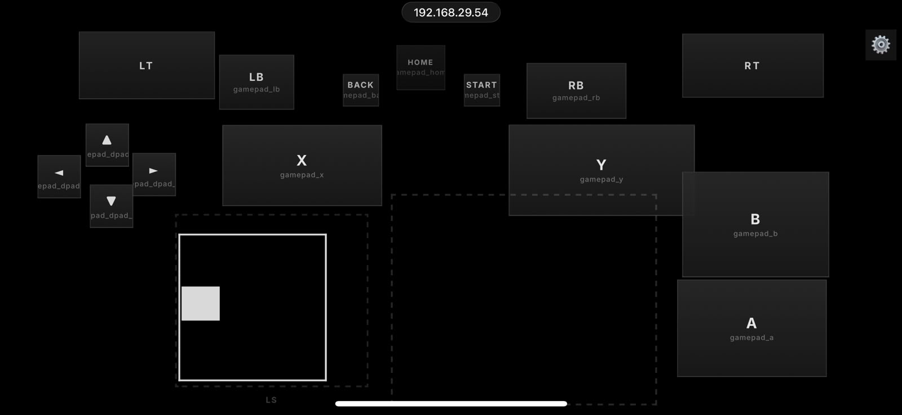

Transform any mobile phone or tablet into a wireless XInput controller for PC. Low-latency Wi-Fi input, dual-mode gyro steering, PC screen streaming, and full touch layout customisation without downloading mobile apps.

Everything needed for a high-performance touch controller experience built from standard web tech.
Connect up to 4 smartphones simultaneously over local Wi-Fi. Assign controller slots 0–3 automatically for multiplayer gaming sessions.
Motion controls with orientation steering for driving games and velocity mode for FPS camera aim. Configurable axis binds for any input.
Configurable touch trigger modes including drag-anywhere surface zones and digital tap triggers for instant touch response times.
Flexible analog stick mapping with custom deadzones and sensitivity curves for Xbox gamepads, mouse movement, or WASD keyboard controls.
Stream your PC display to your mobile phone over WebRTC. Turn your smartphone into a handheld gaming console while relaxing on the sofa.
In-browser visual editor to add, resize, move, and keybind buttons. Share layout files instantly with 1-click JSON compatibility.
Designed from the ground up for privacy, zero mobile bloatware, and direct local connection.
TouchKeys runs entirely inside any modern web browser (Safari, Chrome, Firefox). Simply connect to your PC's local Wi-Fi address or scan the generated QR code—no mobile app installs, store downloads, or APK files required.
100% clean software experience. No background ad services, no telemetry tracking, and no mandatory cloud accounts or user registrations.
Launch the standalone Windows executable, click start server, and you're ready to play instantly.
Point your smartphone camera at the generated QR code for automatic LAN pairing without entering passwords.
Published transparently under the open-source MIT license on GitHub for full code auditability.
Local Wi-Fi hosting communicates input state directly to Windows input drivers with standard WebSockets.
TouchKeys starts a localhost monitor on port 8000 and an HTTPS server on port 8001.
localhost:8001Phone loads webpage via Wi-Fi and opens a persistent WebSocket connection back to PC.
ws://LAN-IP:8001Touch data is processed into normalized analog stick values, trigger states, and button events.
vgamepad engineViGEmBus driver creates a virtual Xbox 360 controller while PyAutoGUI handles KBM input.
ViGEmBus / PyAutoGUIVerified in real gameplay scenarios across popular PC titles, emulation, and cloud gaming.
TouchKeys utilizes the open-source ViGEmBus driver (the standard driver powering DS4Windows). Standard games and Easy Anti-Cheat (EAC) titles function smoothly, but exercise caution with titles enforcing strict ring-0 kernel anti-cheats (such as Valorant Vanguard).
Everything required to set up phone gamepad controls is attached below.
Standalone Windows application containing the server, control center monitor, and layout editor.
Official Virtual Gamepad Emulation Framework driver required for Windows Xbox 360 controller output.
Run ViGEmBus_1.22.0_x64_x86_arm64.exe once to enable virtual controller support on
Windows.
Run TouchKeys-V5.2.exe and click START PHONE SERVER to generate your LAN
QR code.
Scan the QR code with your smartphone camera while on the same Wi-Fi and start playing!